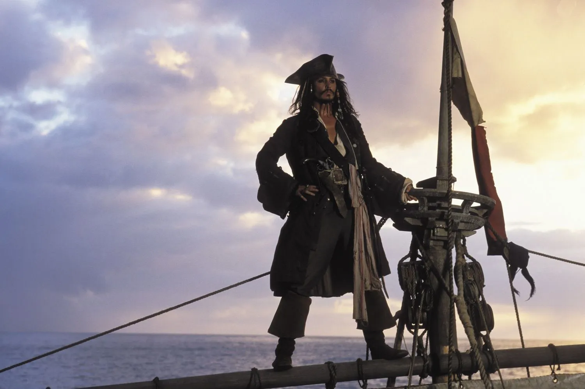

Про мене
Мене звати Джонні Депп. Я американський актор, музикант і продюсер. За свою кар'єру я зіграв багато різноманітних персонажів у кіно.
Однією з моїх найвідоміших ролей став капітан Джек Горобець у серії пригодницьких фільмів «Пірати Карибського моря».
Я народився 9 червня 1963 року в США. Окрім кіно, займаюся музикою та виступаю з рок-гуртами.
Дата народження:
9 червня 1963
9 червня 1963
Професія:
Актор, музикант
Актор, музикант